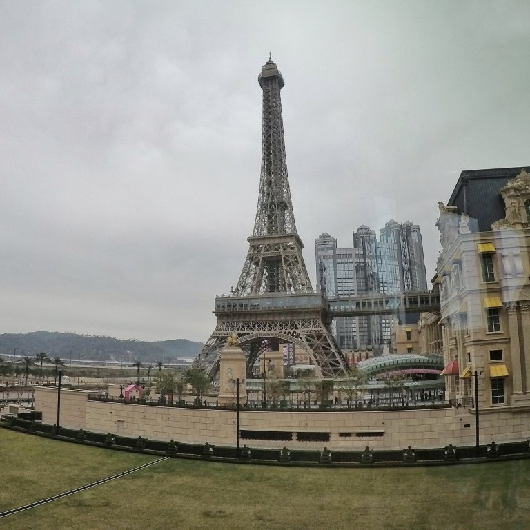

Spinti dall’idea di andare a far visita ai nostri amici Sergio e Cristina, che vivono da un po’ di mesi ad Hong Kong (HK) , decidiamo di prenotare un aereo da Hanoi per raggiungerli.
Prima di incontarli, però, decidiamo di passare due giorni nella vicina Macao: la Las Vegas asiatica. Il paragone a Las Vegas non è affatto un’esagerazione, infatti, secondo alcune statistiche sul volume di denaro che entra ed esce dai casinò di questa città , pare che qui in Asia i giocatori di azzardo siano molto più pronti a rischiare la fortuna rispetto a quanto succeda negli USA.
L’arrivo a Macao prevedeva di prendere l’aereo fino ad Hong Kong e di salire direttamente su uno speed-ferry che in una quarantina di minuti avrebbe coperto i 50km di mare che separano le due città .
Sapevamo che Hong Kong fosse una città molto diversa da quelle visitate fino ad ora, con norme di comportamento diverse, e attenzione per la pulizia molto più forte; siamo rimasti comunque molto sorpresi quando, 10 minuti prima dell’atterraggio, le hostess e gli steward hanno iniziato a sprayare in aria e sopra tutti i passeggeri una sorta di disinfettante.
Pensavamo fosse finita qui, invece, appena sbarcati dall’aereo siamo stati tutti sottoposti a un controllo termico (usavano una specie di pistola a raggi infrarossi scannerizzando la fronte dei visitatori, e una telecamera termica per monitorare l’ambiente circostante) per verificare il nostro stato di salute. Una cosa pazzesca! 🤤
Subito dopo i controlli dell’aeroporto iniziamo a cercare informazioni su come raggiungere lo speed-ferry per Macao. Siamo rimasti sorpresi nel sentire che non saremmo dovuti uscire dall’aeroporto e che, a causa di questioni di immigrazione e dogane, i nostri bagagli da stiva sarebbero stati prelevati dagli operatori dell’aeroporto che li avrebbero fatti arrivare direttamente a Macao. Insomma, sembra una procedura molto semplice e sensata, ma quando i nostri zaini nella stiva dell’aereo erano tutto ciò che avevamo con noi per il viaggio, lasciare che un addetto alle valigie li prelevi per noi e li carichi sul traghetto senza che noi potessimo confermare se fossero stati i nostri, non ci ha fatto stare tranquilli.
Fortunatamente, una volta sbarcati dal traghetto a Macao, abbiamo ritrovato entrambi gli zaini!
I più grandi alberghi e casinò di Macao offrono un servizio di trasporto gratuito per i propri clienti su tutta l’isola. Davanti al porto in cui siamo sbarcati, infatti, c’erano decine e decine di pullman su cui risaltavano i vari loghi e nomi degli alberghi più famosi. Il nostro albergo, essendo più piccolino e meno lussuoso, non offriva alcun mezzo di trasporto di questo genere. Seguendo la folla di gente appena arrivata insieme a noi col traghetto, e selezionando sulla cartina un casinò di lusso nella zona del nostro albergo, decidiamo di infilarci a sbaffo sul corrispettivo pullman. Una volta arrivati davanti all’entrata del casinò, facendo finta di niente, ci abbiamo a piedi verso il nostro hotel 😅.
A differenza delle città visitate fino ad ora, Macao era costituita principalmente da grandi palazzi moderni, che di notte si vengono illuminati.
Prima di uscire la sera a tentare la fortuna in uno dei casinò più grandi della città (il Gran Lisboa), e spinti dalla fame, troviamo un bel ristorantino sul lungomare in cui riposarci. Solo il giorno successivo, discutendone con Sergio e Cristina, ci rendiamo conto di esserci fatti spennare, e che nonostante Macao non sia una città povera, il cibo in genere costa comunque molto poco!!
Passiamo il resto della sera a tentare la fortuna in alcuni casinò della città . Purtroppo questa volta ci è andata male, ma almeno la perdita è stata contenuta! Come è facile immaginare, molti dei giocatori all’interno del casinò passavano la serata a giocare somme molto elevate di denaro. Il nostro budget di 200 HK$ (circa 20 CHF) è comunque bastato per qualche giocata interessante alle slot machines e ad un gioco di dadi! Circondati da giocatori con le mani bucate, il nostro piccolo budget non è passato inosservato. Infatti mentre richiedevamo assistenza ad un impiegato del casinò per la nostra carta magnetica rimasta bloccata in una slot su cui avevamo ancora a disposizione 10 HK$ (1.50 CHF), non siamo riusciti a non notare i ghigni sui volti degli altri giocatori e soprattutto a sentire la risata della dipendente che ci ha aiutati 🤣!
Siccome il giorno successivo saremmo già tornati verso HK, abbiamo deciso di passare la mattinata sulla vicinissima isola di Cotai in cui negli ultimi anni si sono sviluppati tantissimi alberghi enormi e lussuosissimi!
La nostra visita inizia dal Venetian ðŸŽ, ovvero un enorme albergo-casinò in cui risiede, oltre ai tantissimi negozi di marca, casinò e camere, anche una finta Venezia con tanto di Canal Grande e gondole.
Gli edifici che abbiamo visitato durante questa mattinata erano davvero enormi: abbiamo camminato per qualche ora al loro interno senza mai passare due volte dallo stesso punto.
Oltre all’albergo veneziano, siamo rimasti anche affascinati dal Parisian, davanti al quale torreggiava una copia della Tour Eiffel! 🗼

Comment Section